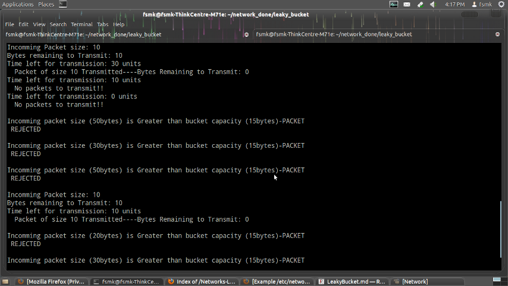
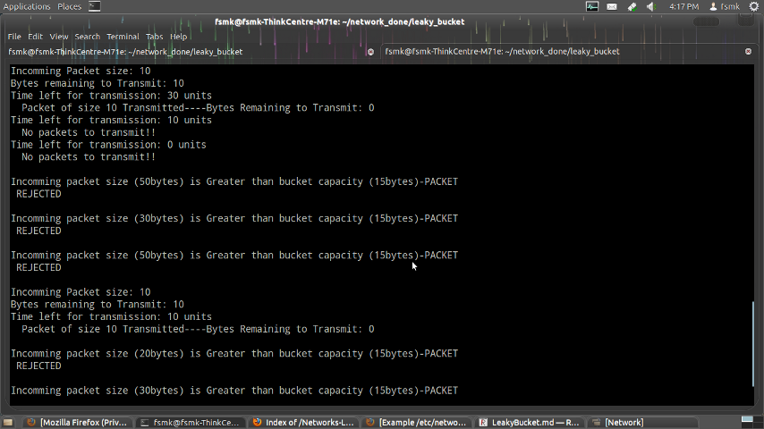
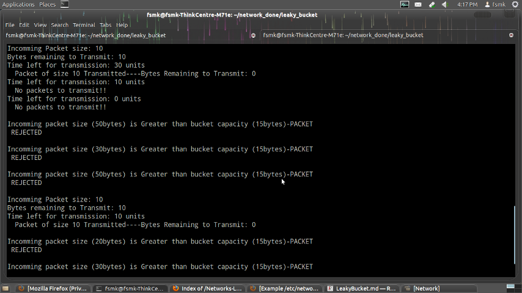

The congesting control algorithms are basically divided into two groups: open loop and closed loop. Open loop solutions attempt to solve the problem by good design, in essence, to make sure it does not occur in the first place. Once the system is up and running, midcourse corrections are not made. Open loop algorithms are further divided into ones that act at source versus ones that act at the destination.
In contrast, closed loop solutions are based on the concept of a feedback loop if there is any congestion. Closed loop algorithms are also divided into two sub categories: explicit feedback and implicit feedback. In explicit feedback algorithms, packets are sent back from the point of congestion to warn the source. In implicit algorithm, the source deduces the existence of congestion by making local observation, such as the time needed for acknowledgment to come back.
The presence of congestion means that the load is (temporarily) greater than the resources (in part of the system) can handle. For subnets that use virtual circuits internally, these methods can be used at the network layer.
Another open loop method to help manage congestion is forcing the packet to be transmitted at a more predictable rate. This approach to congestion management is widely used in ATM networks and is called traffic shaping.
The other method is the leaky bucket algorithm. Each host is connected to the network by an interface containing a leaky bucket, that is, a finite internal queue. If a packet arrives at the queue when it is full, the packet is discarded. In other words, if one or more process are already queued, the new packet is unceremoniously discarded. This arrangement can be built into the hardware interface or simulate d by the host operating system. In fact it is nothing other than a single server queuing system with constant service time.
The host is allowed to put one packet per clock tick onto the network. This mechanism turns an uneven flow of packet from the user process inside the host into an even flow of packet onto the network, smoothing out bursts and greatly reducing the chances of congestion.
#include<stdio.h>
#define NOF_PACKETS 10
int rand(int a)
{
int rn = (random()%10)%a;
return rn == 0 ? 1 : rn;
}
int main()
{
int packet_sz[NOF_PACKETS],i,clk,b_size,o_rate,p_sz_rm=0,p_sz,p_time,op;
for(i=0;i<NOF_PACKETS;++i)
packet_sz[i]=rand(6)*10;
for(i=0;i<NOF_PACKETS;++i)
printf("packet[%d]:%d bytes\t",i,packet_sz[i]);
printf("\nEnter the Output rate:");
scanf("%d",&o_rate);
printf("Enter the Bucket Size:");
scanf("%d",&b_size);
for(i=0; i<NOF_PACKETS; ++i)
{
if( (packet_sz[i] + p_sz_rm) > b_size)
if(packet_sz[i] > b_size)/*compare the packet siz with bucket size*/
printf("\n\nIncomming packet size (%dbytes) is Greater than bucket capacity (%dbytes)-PACKET REJECTED",packet_sz[i],b_size);
else
printf("\n\nBucket capacity exceeded-PACKETS REJECTED!!");
else
{
p_sz_rm += packet_sz[i];
printf("\n\nIncomming Packet size: %d",packet_sz[i]);
printf("\nBytes remaining to Transmit: %d",p_sz_rm);
p_time = rand(4)*10;
printf("\nTime left for transmission: %d units",p_time);
for(clk=10; clk<=p_time; clk+=10)
{
sleep(1);
if(p_sz_rm)
{
if(p_sz_rm <= o_rate)/*packet size remaining comparing with output rate*/
op = p_sz_rm,p_sz_rm = 0;
else
op = o_rate,p_sz_rm -= o_rate;
printf("\n Packet of size %d Transmitted",op);
printf("----Bytes Remaining to Transmit: %d",p_sz_rm);
}
else
{
printf("\nTime left for transmission: %d units",p_time-clk);
printf("\n No packets to transmit!!");
}
}
}
}
}
Commands for execution:-
Screenshots:-
